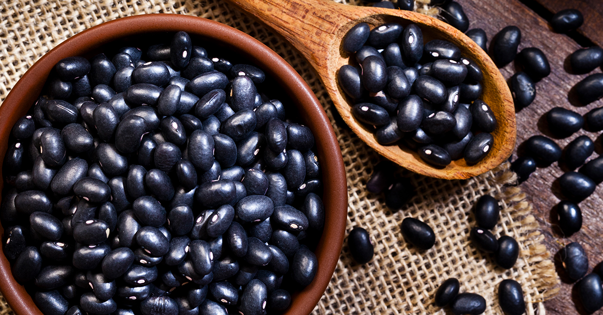

Porotos Negros

Description:
El que nada sabe, nada teme: Mi receta para porotos negros es una maravilla!
Ingredients
- 500g black beans
- One Onion
- Two garlic cloves
- Two Spanish Chorizos
- Salt
- Pepper
- Garlic Powder
- Rosemary
- A can of your favorite beer
Steps
- Wash beans and let them soak in cold water for 24 hours
- Stir fry Onion, garlic and chorizo
- Add Beans and beer
- Add Salt, pepper, garlic powder and rosemary
- Slow cook for 2 hours
- Enjoy!